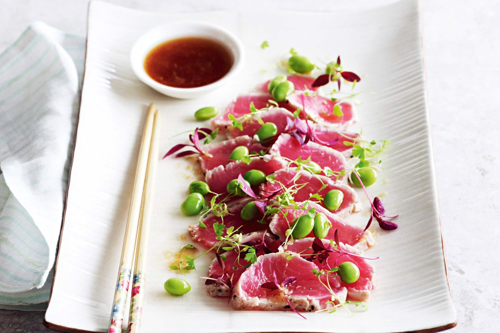

Tuna Tataki

Description
A simple, tuna-focused entree, this dish is little more than dressed up seared tuna. However, the tuna and its accompanying sauce and toppings make for a dish far better than its simplicity would let on. Make sure to get the freshest tuna you can to improve the experience even more.
- 1/2 lb Tuna Steak
- 3 oz Edamame
- 1 tsp Ginger (Grated)
- 3 tsp Sesame Oil
- 2 tbsp Soy Sauce
- 1 tbsp Water
- 1 tbsp Rice Wine Vinegar
- 1 1/2 tsp Sugar
Steps
- Brush tuna with 2 tsp of your sesame oil and season well
- Heat a frying pan on medium-high heat, and cook the tuna for 30 seconds on each side, searing but leaving the inside rare
- Rinse tuna in cold water, then pat dry and slice thinly
- Blanch the edamame in lightly salted boiling water for one minute, drain, rinse in cold water, and pat dry
- Set aside tuna and edamame, then combine all remaining ingredients in a bowl to create the sauce
- Plate the tuna, and garnish with edamame, drizzle sauce on top and serve